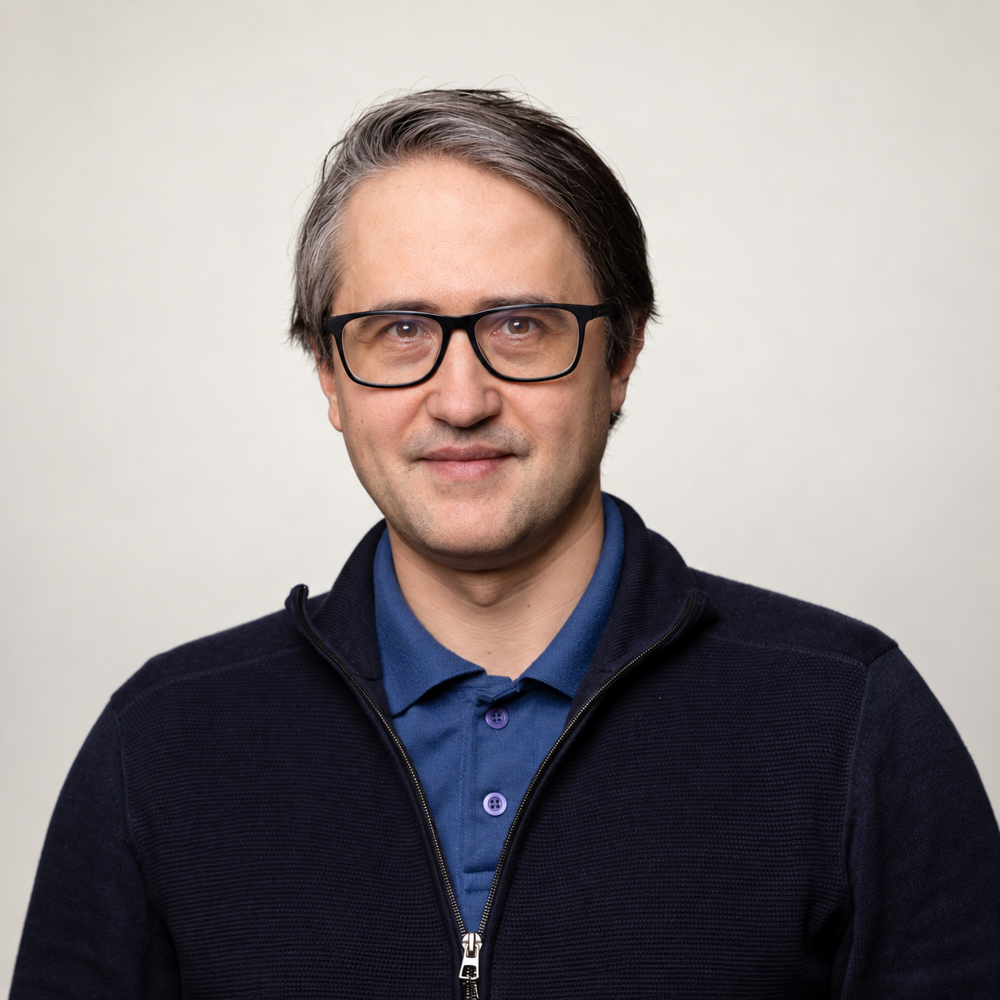
Кадриль на заводе
О превращении 3D-сканов в редактируемые чертежи и будущем инженерного ИИ.
Открыть материалИнтервью, подкасты, лекции, дискуссии и научные семинары. Дата выступления указана там, где она известна; в остальных случаях отмечена дата публикации материала.

О превращении 3D-сканов в редактируемые чертежи и будущем инженерного ИИ.
Открыть материал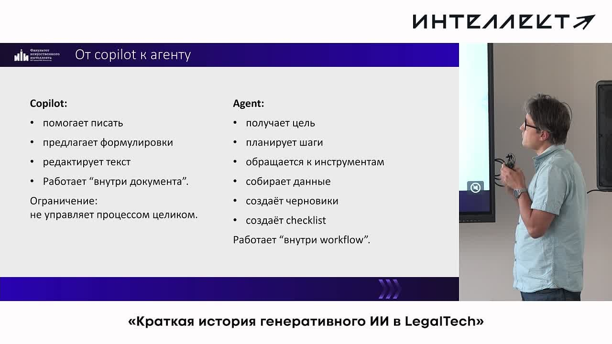
Генеративный ИИ в юридической практике: достоверность, проверка человеком, RAG и агенты.
Открыть материал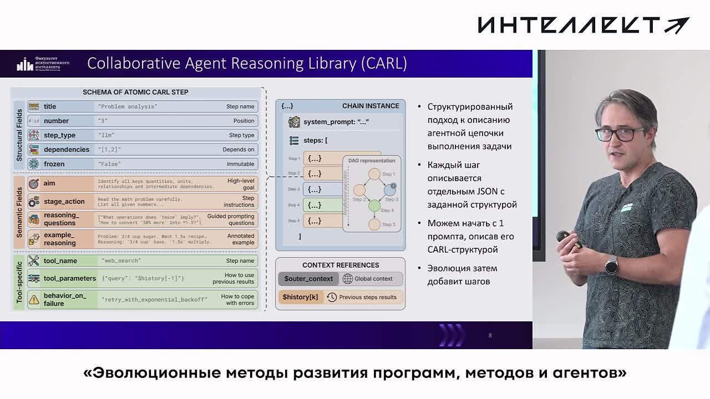
Эволюция кода и ИИ-агентов: AlphaEvolve, GigaEvo, CARL. Дата — по отчёту организатора; ранее указывалось 1 июля.
Открыть материал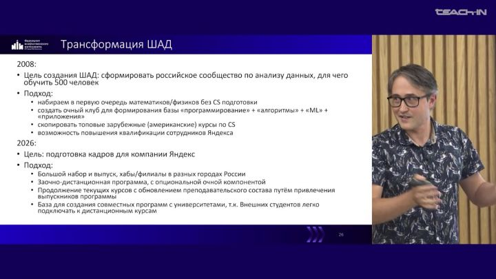
Опыт создания и развития лаборатории КГиМ ВМК МГУ, ФКН ВШЭ и ШАД Яндекса. Запись с несколькими участниками; точный день уточняется.
Открыть материал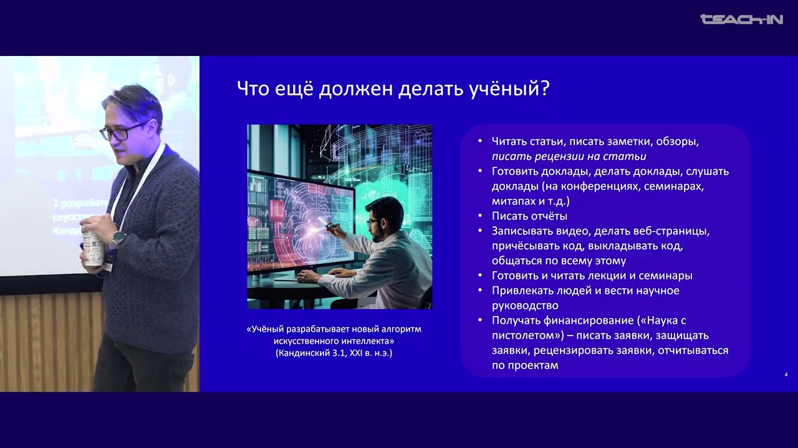
Работа исследователя ИИ, научные публикации, академическая и индустриальная карьера.
Открыть материал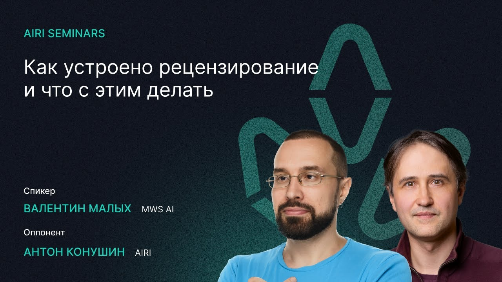
Доклад Валентина Малых о рецензировании научных статей; моё участие — в роли оппонента.
Открыть материал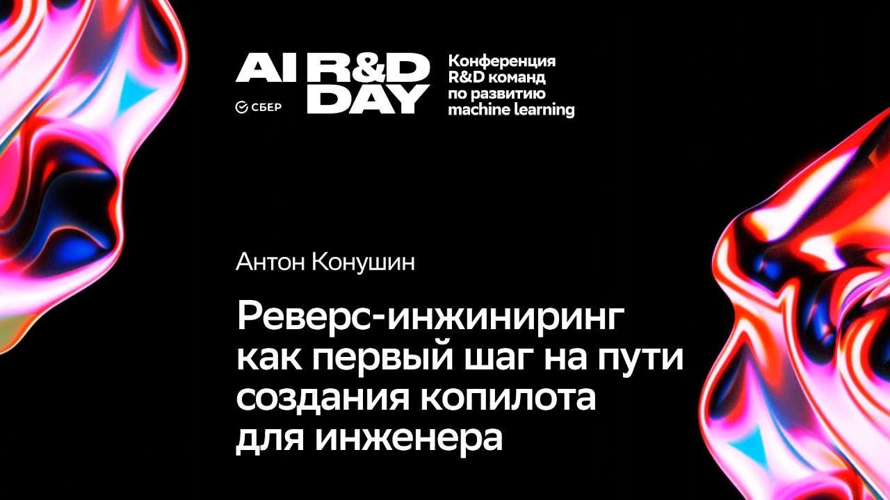
CAD-модели, обратное проектирование и мультимодальные модели.
Открыть материал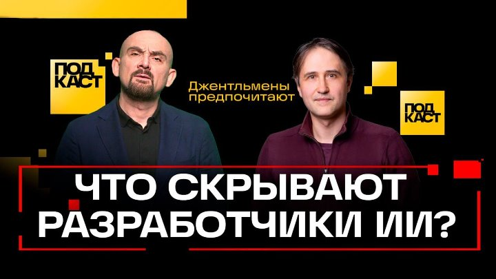
Разговор об истории и безопасности ИИ, ошибках моделей, медицине, инженерии и образовании.
Открыть материал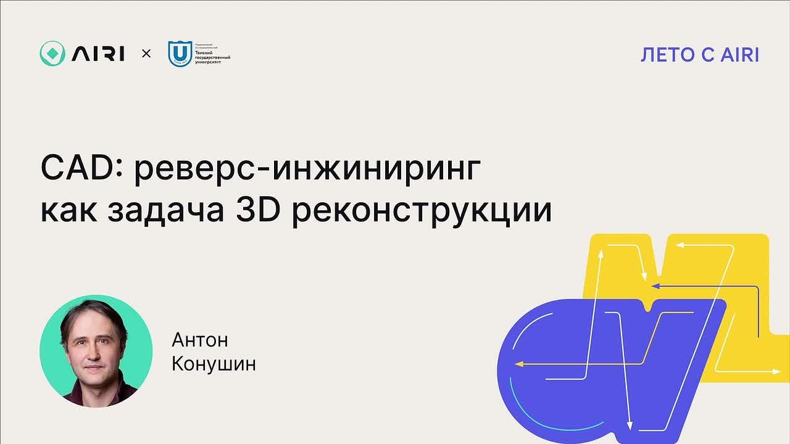
Обратное проектирование CAD-моделей через постановку задачи трёхмерной реконструкции.
Открыть материал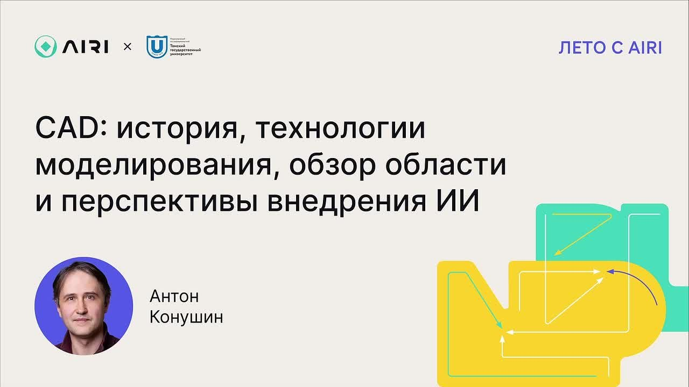
История CAD, способы моделирования, состояние области и перспективы внедрения ИИ.
Открыть материал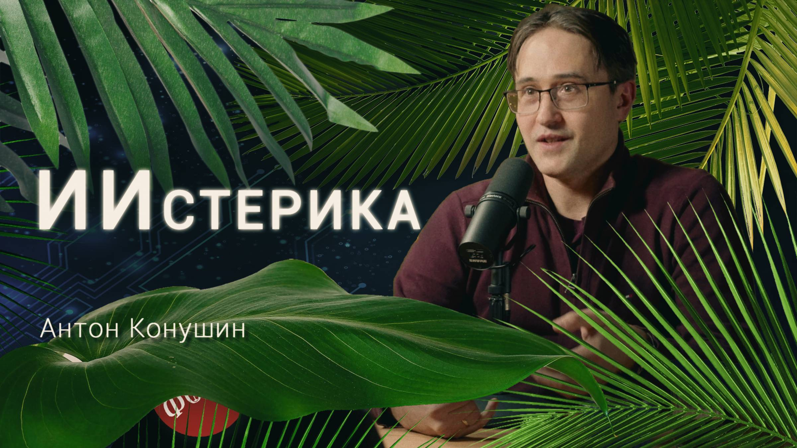
Разговор об устройстве ИИ, пространственном интеллекте, программировании и сознании.
Открыть материал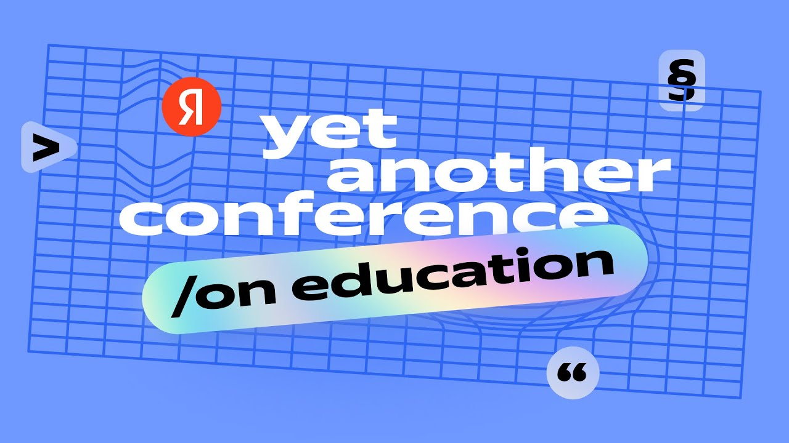
О профессиях будущего и подготовке специалистов, которые будут создавать новые технологии.
Открыть материалДоклад Сергея Колюбина; моё участие — в роли оппонента. Ссылка ведёт на описание семинара.
Открыть материалПодготовка и поддержка научных кадров в ИИ. Ссылка ведёт на программу дискуссии; запись пока не найдена.
Открыть материал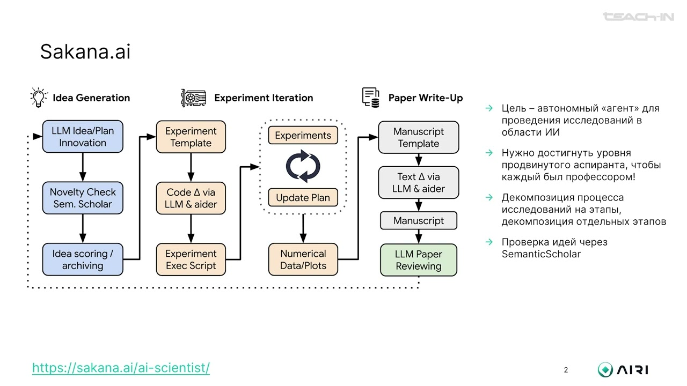
Влияние ИИ на научные исследования. Точный день выступления пока не подтверждён.
Открыть материалДоклад Дениса Димитрова; моё участие — в роли оппонента. Ссылка ведёт на описание семинара.
Открыть материалРазговор о распознавании и синтезе изображений, истории компьютерного зрения и его применениях.
Открыть материал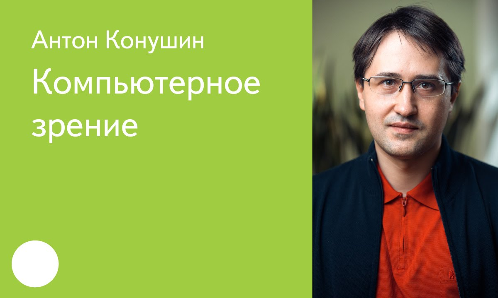
Открытая лекция о задачах компьютерного зрения и распознавании изображений.
Открыть материал